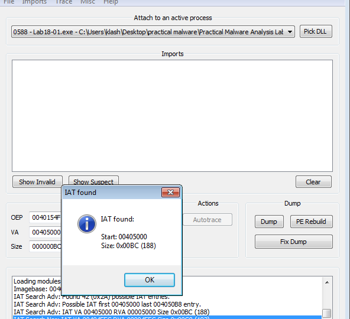
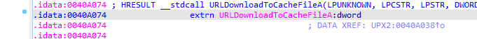
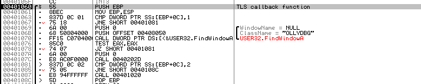
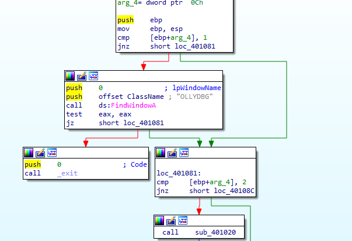

Practical Malware Analysis - Lab 15
This chapter’s labs focus on anti-disassembly techniques
Lab 15-1
Analyze the sample found in the file Lab15-01.exe. This is a command-line program that takes an argument and prints “Good Job!” if the argument matches a secret code.
Q1: What anti-disassembly technique is used in this binary?
Opening the malware in ida we notice the red cross-references which are indicators of anti-disassembly
here is setting zero flag with conditional jump on zero flag jz so it’s just absolute jump but did that way
for ida to wrongly disassemble what the false branch first which is after the jz instruction.
We notice in jz it is jumping to 401010+1 so it’s just a rogue byte inserted between the two
Q2: What rogue opcode is the disassembly tricked into disassembling?
Pressing d then c at 401010+1 , the red xref disappears and the rogue byte is E8 which is the opcode start of call
Q3: How many times is this technique used?
4 more times
Q4: What command-line argument will cause the program to print “Good Job!”?
After some cleaning then hovering all main function pressing p to convert to function we get this normal function
Then we can convert to clean psuedocode, It checks first if some argument is passed then proceeds to do some char checks
inputting pdq we get the desired output

Lab 15-2
Analyze the malware found in the file Lab15-02.exe. Correct all anti-disassembly countermeasures before analyzing the binary in order to answer the questions.
Q1: What URL is initially requested by the program?
Cleaning the anti-disassembly, we see couple of rogue bytes like this cleaning with d then c
then we see another technique

Cleaning the EB byte we get
Then we see another anti-disassembly two jz jnz which just means absolute jump but to make ida disassemble the false branch first
Cleaned

anti-disassembly with valid two instruction (book called this impossible assembly)
Cleaned with just converting to code the jmp call location and NOPing others

After a lot of similar cleaning we get a clean psuedocode, it gets hostname of the local computer then exchanges some characters (ROT1)
Prepares the name, puts it in User-Agent
then sends it to http://www.practicalmalwareanalysis.com/bamboo.html
Reads the response cuts what is after Bamboo:: and before
.. image:: 2q12.png
Calls the string after Bamboo, Then saves the content to Account Summary.xls.exe then executes it
Q2: How is the User-Agent generated?
Above
Q3: What does the program look for in the page it initially requests?
Above Bamboo
Q4: What does the program do with the information it extracts from the page?
Above